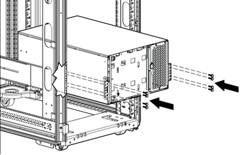
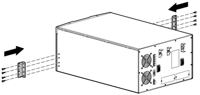

Removal of the UPS System.
-
Note or record the wiring of the UPS.
-
Remove all cables from the UPS.
-
Remove the UPS battery modules (see UPS_Battery_Kit -
Exchange).
-
Remove the screws (see Figure 1).
Figure 1. UPS
Chassis Screws

-
With one person on each side, slide the chassis out of the
rail and put it down to the floor.
-
Remove the mounting ears from the chassis (see Figure 2).
Figure 2. UPS
Chassis Mounting Ears
